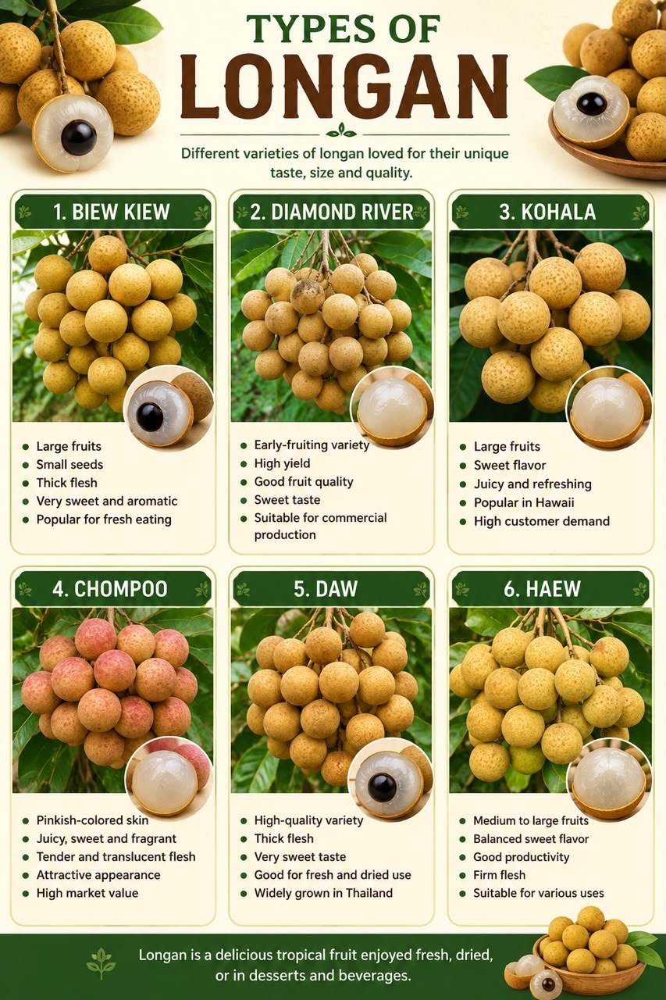
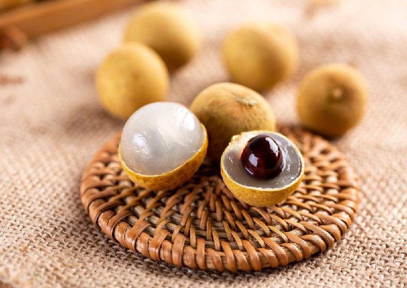

HISTORY
Longan (Dimocarpus longan), also known as “dragon’s eye,” originated in southern China and parts of Southeast Asia and has been cultivated for more than 2,000 years. Its name comes from the Chinese term lóng yǎn, meaning “dragon’s eye,” because the fruit’s translucent flesh and dark seed resemble an eye when peeled. Longan was highly valued in ancient China and was often offered as a tribute to emperors before spreading to neighboring countries such as Vietnam and Thailand. Today, it is widely grown throughout tropical and subtropical regions, including Malaysia, and is enjoyed fresh, dried, or as an ingredient in desserts, beverages, and traditional medicine. Longan belongs to the same plant family as Lychee and Rambutan.

TYPES OF LONGAN
- Biew Kiew
- Diamond River
- Kohala
- Chompoo
- Daw
- Haew
HEALTH BENEFITS
- Rich in Vitamin C – helps strengthen the immune system.
- High in Antioxidants – protects body cells from damage.
- Supports Healthy Skin – promotes glowing and healthy skin.
- Good Source of Minerals – supports overall body health.

HOW TO PLANT LONGAN
Choose a Suitable Location
Plant longan in a sunny area with well-drained soil.
Plant the Seedling
Place the seedling in the hole and cover the roots with soil.
Water Regularly
Keep the soil moist, especially during the first year.
Apply Fertilizer
Use a balanced fertilizer every few months to encourage healthy growth.
Maintain and Care for the Tree
Monitor and control pests and diseases by regularly checking the tree and removing affected parts.
FUN FACTS
- Longan water is currently a viral drink trend in Malaysia.
- Many people enjoy it because it is refreshing, naturally sweet, and often served chilled with fresh longan, ice and lemon.
- Its popularity on social media has made it a favorite beverage, especially during hot weather and festive season.